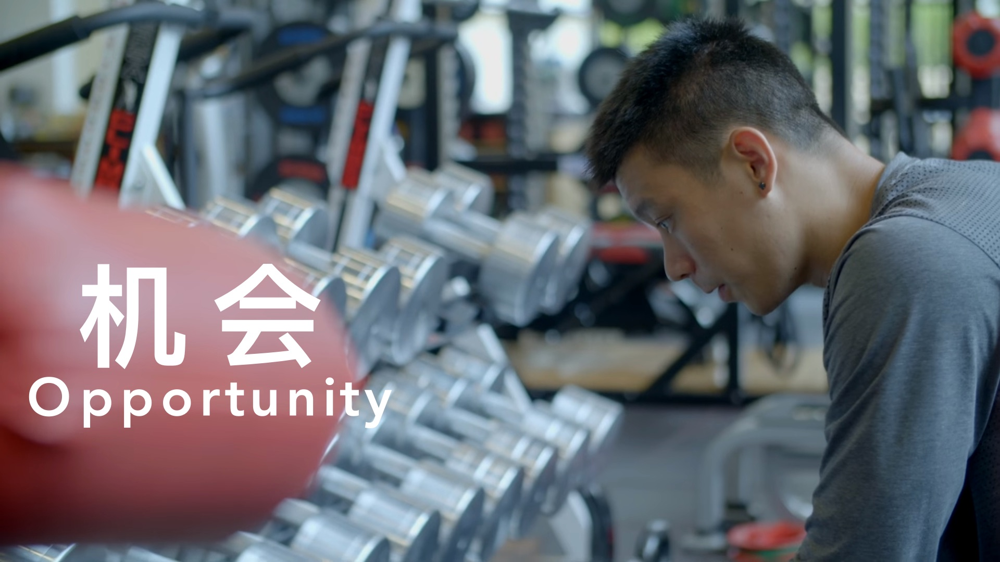

机会 | Opportunity

机会 Opportunity - 是一个励志视频。这个视频的目的是为了鼓励和激励任何的人，在任何的处境。比方说用来激励在你的生意上，运动时，做功课时，考试时，做工时，等等。机会处处都是。每个人都曾经过失了其实属于自己的机会。但是别灰心，我们必须积极和乐观的看待任何事情，机会过失了，肯定还有更好的机会等待我们。 机会 Opportunity - is a video to motivate any person, let it be in your business, sports, working, education, or any circumstances. It can help you to empower and realise your true…